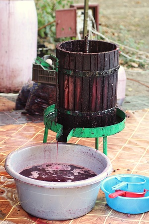
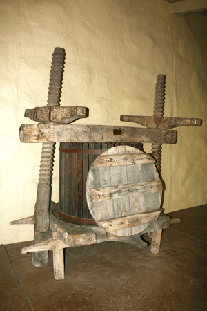
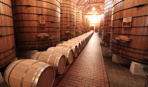

ϩⲣⲱⲧ SSfABF, ⲉϩ. B nn f, wine-press, vat: Ex 22 29 SB, Pro 3 10 B (SA ⲉⲓⲟⲙ), Lam 1 15 BF, Hos 9 2 Sf (JEA 11 245) ABF, Joel 3 13 AB, ib 2 24 B (SA ⲉⲓ.), Ap 19 15 SB ληνός, Is 16 10 B (S ⲉⲓ.), Zech 14 10 SAB ὑπολήνιον, Is 5 2 B (S do) προλ.; ib 63 2 S ⲙⲣⲓⲥ ⲛϩ. (B Gk diff); Dif 1 67 B martyrs crushed in ϯϩ. نورج (but Synax 1 117 معصار); P 44 63 S ⲉⲛⲑⲣⲟⲡⲓⲟⲛ · ⲧⲉϩ. معصرة, K 446 B sim; Ann 19 232 S set up ⲧⲉϩ. ⲛⲥⲉϭⲣⲏ ⲙⲡⲉⲓⲟⲙ ϩⲛⲧⲉⲥⲙⲏⲧⲉ = C 86 107 B ⲉϩ., P 1313 85 S ϣⲓⲕⲉ ⲛ[ϩⲉⲛ]ϩ. = Va 61 96 B ⲕⲱⲧ ⲛϩⲁⲛϩ., CA 107 S ϫⲱⲱⲗⲉ ⲙⲡⲉϥϭⲱⲙ ⲉⲧⲉϩ., BMis 207 S ⲛⲓⲟⲙ ⲛⲏⲣⲡ…ⲛϩ.ⲙⲁ ⲛⲉⲣϩⲱⲧ B (l ⲉϩⲣ.) in which saint confined C 86 105.As place-name (?): دهروط opposite Maghâgha.
(noun female)
tool
wine-press, vat [ληνος]



complete
704b
See also:
| view | ⲏⲣⲡ SALBF ⲏⲗⲡ F ⲉⲣⲡ-, ⲣⲡ- S | (noun male) f twice, wine [οινος]180 |
| view | ⲉⲓⲟⲙ, ⲓⲟⲙ S ⲉⲓⲁⲙ, ⲓⲁⲙ A ⲓⲟⲙ B plural: ⲁⲙⲁⲓⲟⲩ B | (noun male) sea [θαλασσα]
metaphorically ― trench, conduit ― wine press [ληνος, προληνιον]710 |